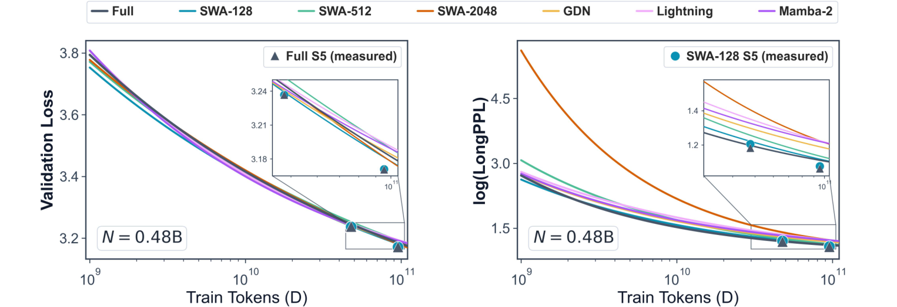

Why it matters왜 중요한가
If the efficient module is an optimization prior rather than a carrier, then most of the hybrid-architecture literature has been optimizing the wrong component.
효율 모듈이 운반자가 아니라 최적화 사전이라면, 하이브리드 아키텍처 문헌 대부분은 엉뚱한 부품을 최적화해 온 셈이다.
Consider what the field has actually been doing. Lightning Attention → Mamba-2 → Gated DeltaNet is a progression of increasingly expressive recurrent update rules: GDN adds a data-dependent decay αt and a delta-rule term that erases the old association at kt before writing the new one. Each step is a real improvement in how much history a fixed-size state can hold. This paper's receptive-field experiment says that in a 1:1 hybrid, none of that extra state capacity is being used for long-range recall at inference time. GDN's beautiful update rule is, for long-context purposes, doing local work.
이 분야가 실제로 무엇을 해왔는지 보라. Lightning Attention → Mamba-2 → Gated DeltaNet은 점점 표현력이 커지는 재귀 갱신 규칙의 계보다: GDN은 데이터 의존 감쇠 αt에 더해, 새 연관을 쓰기 전에 kt의 옛 연관을 지우는 델타 규칙 항까지 넣는다. 매 단계가 고정 크기 상태가 담을 수 있는 과거의 양을 실제로 늘렸다. 그런데 이 논문의 수용 영역 실험은, 1:1 하이브리드에서 그 늘어난 상태 용량이 추론 시 장거리 회상에 전혀 쓰이지 않고 있다고 말한다. GDN의 아름다운 갱신 규칙은, 롱컨텍스트 관점에서는, 국소적인 일을 하고 있다.
The practical consequence flips a design instinct. When your hybrid underperforms on long context, the reflex is to widen the window or upgrade the mixer. This paper says that reflex is actively harmful under a limited training budget: widening the window is precisely what starves full attention of the gradient signal it needs. The bottleneck is not the efficient module's power — it is whether the training distribution still leaves enough dependencies outside the window to force full attention to go looking.
실용적 귀결은 설계 본능을 뒤집는다. 하이브리드가 롱컨텍스트에서 부진하면 반사적으로 창을 넓히거나 mixer를 업그레이드한다. 이 논문은 제한된 학습 예산에서 그 반사가 오히려 해롭다고 말한다. 창을 넓히는 것이야말로 풀 어텐션이 필요로 하는 기울기 신호를 굶기는 행위이기 때문이다. 병목은 효율 모듈의 성능이 아니라, 학습 분포가 여전히 창 바깥에 충분한 의존성을 남겨 풀 어텐션이 찾아 나서게 만드는가다.

By the numbers핵심 숫자
The design payoff — and where to look twice설계의 성과 — 그리고 두 번 봐야 할 곳
| Setting | Model | ShortAvg | RULER (16K) | RULERNIAH (16K) | LongBench (16K) | RULER (32K) |
|---|---|---|---|---|---|---|
| S4 · 0.22B | Full | 38.13 | 25.09 | 35.95 | 15.09 | — |
| S4 · 0.22B | SWA-128 | 38.03 | 35.33 | 49.58 | 15.88 | — |
| S4 · 0.22B | SWA-128-NoPE | 37.88 | 44.80 | 67.81 | 16.43 | — |
| S5 · 0.66B | Full | 40.46 | 47.17 | 67.14 | 18.44 | 43.90 |
| S5 · 0.66B | SWA-128 | 41.31 | 46.13 | 65.91 | 17.52 | 41.86 |
| S5 · 0.66B | SWA-128-NoPE | 41.32 | 52.88 | 82.31 | 19.02 | 46.98 |
In one diagram한 장의 그림
Two experiments that carry the whole argument논증 전체를 지탱하는 두 실험
Receptive-field constraint
Take S4 models trained at D = 1000N and, at inference only, clamp one side's receptive field to ≈2048 tokens. Clamp the efficient layers — including Lightning, Mamba-2 and GDN, whose recurrent states are in principle unbounded — and log(LongPPL) barely moves. Clamp the full-attention layers and it rises sharply, in every hybrid. The delicate delta-rule state in GDN turns out to hold almost no long-range information at inference. Layer-wise NIAH probing tells the same story from a different angle: incremental probing accuracy climbs almost exclusively at the odd-numbered (full-attention) middle layers, while the even-numbered efficient layers contribute nothing and sometimes reduce accuracy. Full attention is the carrier; that shared carrier is why all seven hybrids converge to the same place.
D = 1000N으로 학습한 S4 모델을 가져와, 추론 시에만 한쪽의 수용 영역을 ≈2048 토큰으로 조인다. 효율 층 쪽을 조이면 — 원리상 상태가 무한한 Lightning·Mamba-2·GDN을 포함해 — log(LongPPL)이 거의 움직이지 않는다. 풀 어텐션 층 쪽을 조이면 모든 하이브리드에서 급격히 치솟는다. GDN의 정교한 델타 규칙 상태는 추론 시 장거리 정보를 거의 담고 있지 않은 것으로 드러난다. 층별 NIAH 프로빙이 다른 각도에서 같은 이야기를 한다: 증분 프로빙 정확도는 거의 전적으로 홀수 번째(풀 어텐션) 중간 층에서 오르고, 짝수 번째 효율 층은 기여가 없거나 때로는 정확도를 떨어뜨린다. 운반자는 풀 어텐션이다. 그리고 그 운반자를 공유하기 때문에 하이브리드 7종이 같은 곳으로 수렴한다.
Gradient influence + retrieval-head tracing
Two independent probes for the laziness claim. (1) Measure G(d) = 𝔼[‖∂s(x)/∂eT−d‖₂] on Llama-3.1-8B over long pretraining documents: substantial signal survives out to 2048 tokens, then flattens to a baseline. So a 2048 window captures nearly all of the exploitable next-token signal, and a 128 window leaves most of it outside. (2) Densely checkpoint S4 runs before D = 200N, identify retrieval heads by NIAH attention mass, and track normalized attention entropy H(t) and relative Q/K parameter distance dQK(t). SWA-2048 is the visible outlier on both: entropy stays high, Q/K distance shrinks slowly, and the Frobenius norm of the gradient on those heads' Q projections rises later. Note the honest limitation baked into probe (1) — G(d) is measured on a different, full-attention model and assumed transferable.
게으름 주장을 뒷받침하는 독립적인 두 탐침. (1) 긴 사전학습 문서에서 Llama-3.1-8B로 G(d) = 𝔼[‖∂s(x)/∂eT−d‖₂]를 측정한다: 2048 토큰까지 상당한 신호가 살아 있다가 그 뒤로 기준선으로 평평해진다. 즉 2048 창은 활용 가능한 다음 토큰 신호를 거의 다 담고, 128 창은 대부분을 바깥에 남긴다. (2) D = 200N 이전 구간에서 S4 학습을 촘촘히 체크포인트하고, NIAH 어텐션 질량으로 retrieval head를 식별한 뒤, 정규화 어텐션 엔트로피 H(t)와 상대 Q/K 파라미터 거리 dQK(t)를 추적한다. 둘 다에서 SWA-2048이 눈에 띄는 이상치다: 엔트로피가 높게 유지되고, Q/K 거리가 천천히 줄고, 그 head들의 Q 사영에 걸리는 기울기 Frobenius 노름이 더 늦게 올라온다. 탐침 (1)에 내장된 정직한 한계도 짚어두자 — G(d)는 다른 풀 어텐션 모델에서 측정한 뒤 전이 가능하다고 가정한 값이다.
How it works어떻게 작동하나
- Build a controlled zoo. 통제된 동물원을 짓는다. Full baseline plus six 1:1 layer-wise hybrids — SWA-128 / 512 / 2048, Lightning, Mamba-2, GDN — matched on layers, hidden size, GQA grouping and head dim, with FFN width or state dimension nudged so total parameters line up. Full attention gets a learnable per-head softmax sink to defuse attention-sink artifacts. Pretrain at 16K on a 1:1 long/short mixture under a WSD schedule (90% stable, 10% decay).Full 기준선에 1:1 층별 하이브리드 6종 — SWA-128/512/2048, Lightning, Mamba-2, GDN — 을 더한다. 층 수·은닉 차원·GQA 그룹·헤드 차원을 맞추고, FFN 폭이나 상태 차원을 미세 조정해 총 파라미터를 일치시킨다. 풀 어텐션에는 attention-sink 아티팩트를 눌러 주는 학습 가능한 헤드별 softmax sink를 넣는다. WSD 스케줄(안정 90%, 감쇠 10%)로 긴/짧은 데이터 1:1 혼합 위에서 16K로 사전학습.
- Fit two power laws, not one. 거듭제곱 법칙을 하나가 아니라 둘 적합시킨다. L(N, D) = aN−α + bD−β, fitted separately per architecture for validation loss (40K held-out C4 samples) and for log(LongPPL) (GovReport, Llama-3.1-8B picking the long-context-dependent tokens). Fit on the 18 S1–S3 points, hold out the 6 S4 points as verification. The S1/D=100N checkpoint is dropped from the LongPPL fit as unstable, leaving 17 points there.L(N, D) = aN−α + bD−β를 아키텍처별로 두 번 적합한다: validation loss(C4 홀드아웃 4만 샘플)와 log(LongPPL)(GovReport, 장문맥 의존 토큰은 Llama-3.1-8B가 선별). S1–S3의 18개 점으로 적합하고 S4의 6개 점을 검증용으로 남긴다. LongPPL 적합에서는 S1/D=100N 체크포인트를 불안정하다는 이유로 빼서 17개 점을 쓴다.
- Ask where the information lives. 정보가 어디 사는지 묻는다. Inference-time receptive-field clamping on each side separately, then layer-wise logistic-regression probing on NIAH hidden states. Both point at the full-attention layers, which explains the convergence half of the scaling result.양쪽을 따로 추론 시 수용 영역 제한으로 조이고, 이어서 NIAH 은닉 상태에 층별 로지스틱 회귀 프로빙을 돌린다. 둘 다 풀 어텐션 층을 가리키고, 이것이 스케일링 결과의 수렴 쪽 절반을 설명한다.
- Ask why the rates differ. 속도가 왜 다른지 묻는다. Gradient influence profiling gives the 2048-token cliff; retrieval-head tracing catches SWA-2048 forming its heads late. Together these explain the divergence half.기울기 영향 프로파일링이 2048 토큰 절벽을 주고, retrieval head 추적이 SWA-2048의 늦은 head 형성을 잡아낸다. 둘이 합쳐 발산 쪽 절반을 설명한다.
- Turn the mechanism into a knob. 메커니즘을 손잡이로 바꾼다. Three design probes: a 1:3 full-to-efficient ratio (worse at small scale, gap closes at large); head-wise vs. layer-wise mixing (head-wise converges slower, no advantage); and NoPE on the full-attention layers of SWA-128 (large log(LongPPL) drop, validation loss untouched). Only the third is then trained to 0.22B/0.66B at ≈100B tokens and benchmarked, with S5 further extended 5B tokens at 32K.설계 탐침 세 가지: 1:3 풀-대-효율 비율(작은 스케일에서 나쁘고, 큰 스케일에서 간격이 닫힘), 헤드별 vs 층별 혼합(헤드별이 더 느리게 수렴, 이점 없음), 그리고 SWA-128의 풀 어텐션 층에 NoPE(log(LongPPL) 큰 폭 하락, validation loss는 그대로). 이 중 세 번째만 0.22B/0.66B에서 ≈100B 토큰으로 학습해 벤치마크하고, S5는 32K로 5B 토큰을 더 이어 학습한다.
What to take away그래서, 가져갈 것
If you are training a hybrid under a fixed token budget, prefer the small window. This inverts the usual instinct and it is the most immediately actionable result here: SWA-128 beats SWA-2048 on long context precisely because it is weaker locally. And since validation loss is flat across all of these choices, your short-context eval will not warn you that you picked wrong — the cost of a large window shows up only in log(LongPPL), and only while you are still token-limited.
고정된 토큰 예산으로 하이브리드를 학습한다면 작은 창을 택하라. 통상의 본능을 뒤집는, 이 논문에서 가장 즉시 써먹을 수 있는 결과다: SWA-128이 롱컨텍스트에서 SWA-2048을 이기는 이유는 바로 국소적으로 약하기 때문이다. 게다가 이 선택들 전반에서 validation loss가 평평하므로, 짧은 문맥 평가는 당신이 잘못 골랐다고 경고해 주지 않는다 — 큰 창의 대가는 오직 log(LongPPL)에서만, 그리고 토큰이 아직 부족한 동안에만 드러난다.
"Unbounded receptive field" is a property of the recurrence, not of the trained model. Mamba-2 and GDN can hold arbitrarily old information in St; in a 1:1 hybrid trained this way, they demonstrably do not. Anyone reaching for a linear-attention layer because its state is theoretically unbounded should treat that as a hypothesis to test on their own checkpoint — the receptive-field clamp is a cheap, inference-only diagnostic that you can run in an afternoon.
"무한한 수용 영역"은 재귀식의 성질이지 학습된 모델의 성질이 아니다. Mamba-2와 GDN은 임의로 오래된 정보를 St에 담을 수 있지만, 이렇게 학습된 1:1 하이브리드에서는 실증적으로 담지 않는다. 상태가 이론상 무한하다는 이유로 선형 어텐션 층을 집어 드는 사람은 그것을 자기 체크포인트에서 검증할 가설로 다뤄야 한다 — 수용 영역 제한은 추론만으로 되는 값싼 진단이고, 반나절이면 돌린다.
Read Table 2's two RULER columns against each other before you adopt NoPE. The +15.2 on NIAH is real and large, but the five non-NIAH RULER tasks fall from 15.21 to 5.80 at S5, with frequent-word extraction going 40.17 → 0.50. The intervention appears to sharpen positional-agnostic lookup at the direct expense of tasks needing counting and order. If your long-context workload is retrieval-shaped (RAG, needle recall, long-doc QA) this is a good trade; if it involves aggregation over the whole context, the headline number is not measuring your task.
NoPE를 채택하기 전에 표 2의 두 RULER 열을 서로 대조해 읽으라. NIAH의 +15.2는 진짜이고 크지만, NIAH가 아닌 RULER 5개 과제는 S5에서 15.21에서 5.80으로 떨어지고, 빈출 단어 추출은 40.17 → 0.50이 된다. 이 개입은 위치에 둔감한 조회를 날카롭게 만드는 대신 세기와 순서가 필요한 과제를 직접적인 대가로 치르는 것으로 보인다. 롱컨텍스트 워크로드가 검색형(RAG, needle 회상, 장문서 QA)이라면 좋은 거래지만, 문맥 전체에 대한 집계가 섞여 있다면 헤드라인 숫자는 당신의 과제를 재고 있지 않다.